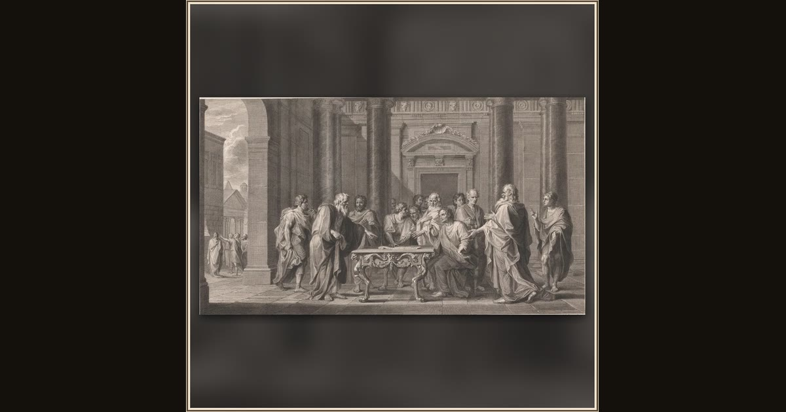

Solon zijn wetten verdedigend tegen de bezwaren van de Atheners
Gaspard Duchange, after Noël Coypel · 1717 · rijksmuseum
Solon faces objections from a group of Athenians about his laws; Aristotle names him as a lawgiver of middle condition while arguing for a strong middle class (4.1296a) Explore its place in Aristotle's Politics, Book IV, section 16.